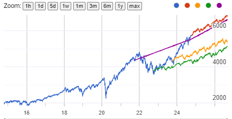

After that I wanted to see if it can predict the future in any way at all so I ran it each year back to 2021 and put all the results on a graph.

It clearly has no accuracy predicting the future from this graph, 2024, 2023 and 2022 data all trend the exact same direction over the long term with basically just random noise added on.
2021 was an interesting glitch I will get to next.
Overall the tech is interesting and cool but not perfect and a horrible predictor of the future market.
It definitely has useful functions like the ones they provided in the tutorial sheet but the stock market has far too many variables to be predicted by something like this.
It would be interesting to get yearly weekly and daily data and layer them to try to get better prediction or use it for a more specific function like short term day trading with less outside factors.